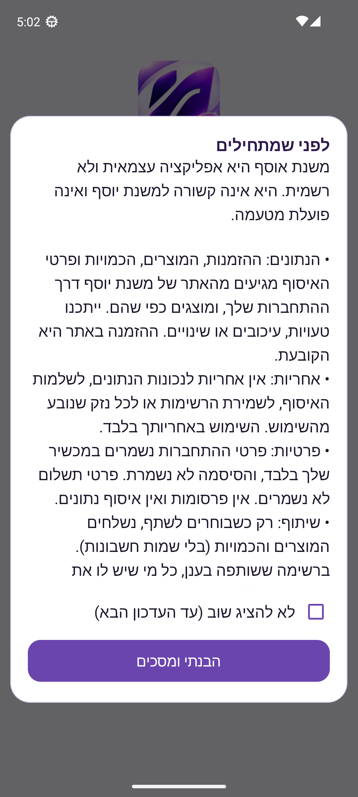

Package org.mishnatyosef.pickup · {"model": "sdk_gphone64_x86_64", "sdk": "33", "release": "13", "abi": "x86_64", "locale": "", "screen": "1080x2400"}
| # | Action | Detail | Result | Error |
|---|---|---|---|---|
| 1 | clear_data | passed | ||
| 2 | push | src='fixtures/ui-test-list.txt', dest='/sdcard/Download/ui-test-list.txt' | passed | |
| 3 | launch | passed | ||
| 4 | wait_for | text='כניסה לחשבון' | failed | element not found within 30s: text='כניסה לחשבון' |
